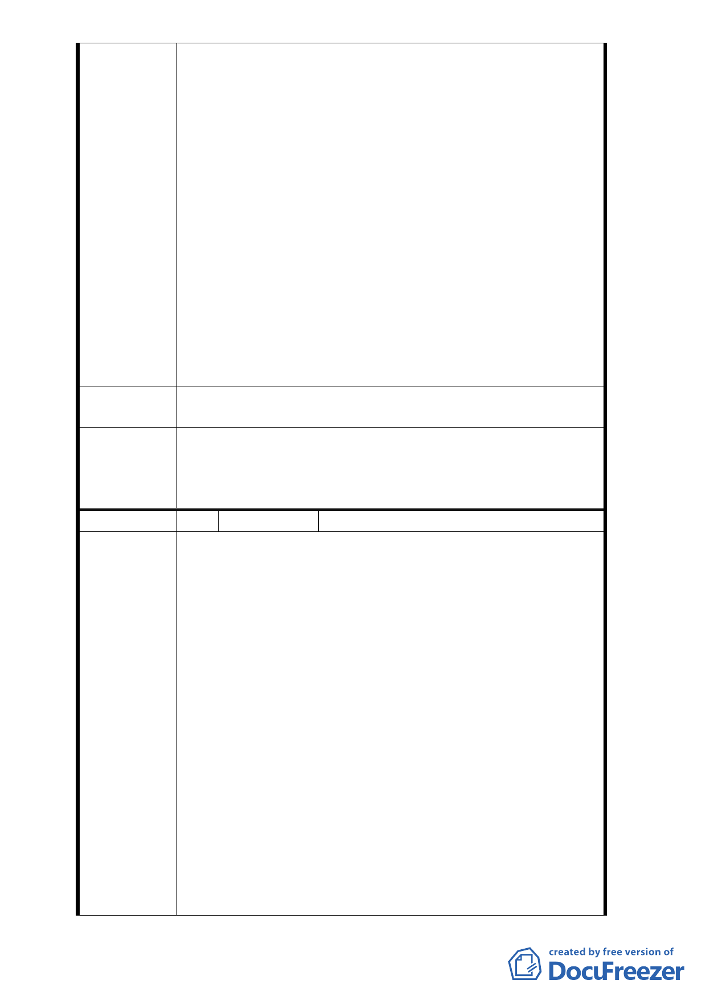

地，按建商寸土必爭，利益掛帥，貴會有何必要配合
圖利建商之理？
（5）東湖地區缺乏公園綠地，久為居民所不滿，如今好不
容易才有「大有巴士停車場」用地闢建為簡易綠地工
程之完工，但貴會卻甘為「吉祥區都市更新會」來削
減公園用地，試問，此種作法豈非自相矛盾？
4.按市政如麻，貴會終日為市民生活機能福祉把關，本律
師甚表感佩，但若為配合合家歡建設公司或吉祥區都市
更新會之重建而變更此短短百公尺之道路，本律師甚難
苟同；基於社區公民之一份子，特提出以上意見，尚請
貴會審議時，能以「社區居民利益為先」，而不應配合
建商及更新會來切割都市之肺為前提，在貴會明知全東
湖地區甚至全臺北市從未變更任何一條六至八米寬道
路，以及四號公園東、西、南三面之六米道路均未拓寬
，但為配合都市更新單元而來削減公園用地，此種都市
計畫之變更，顯有圖利廠商之意圖甚為明顯，為此特提
出以上意見，懇請貴會三思為盼！
建議辦法
請勿將臺北市內湖區東湖路一小段19地號部分公園用地變
更為道路用地，以使市民享有悠閒之休憩空間。
一、 本案因與會委員多數表達不贊同因更新案建築設計
委員會決議
二、
不符法規規定而變更都市計畫，故本案不予通過。
有關本地區交通系統檢討部分，請市府納入內湖區
都市計畫通盤檢討辦理。
編 號 2 陳情人 祥和法律事務所 律師余鐘柳
為台北市內湖區東湖段一小段 19 地號部分公園用地變更
為道路用地，顯係為圖利建商乙案，再提出圖利理由事
。
1. 查本律師於住家大門口見里辦公室張貼「都市計畫變更
公聽會」之訊息，由變更計畫圖上，一眼即看出，上開
專案變更純係為吉祥區都更而變更，涉有圖利建商之嫌
，因而於召開公聽會之前，即以 100 年鐘律字第 0609
號函知貴會應審慎處理在案。
2. 現準時出席公聽會，依主辦單位之說明，本案係因 1、
陳 情 理 由 吉祥案之都更已取得建造執照，為免重新辦理變更設計
而延宕興建時程 2、康樂街 110 巷 2-12 號（單號面 1-15
號）道路寬度為八米，而本路段寬度為六米，若代都市
計畫檢討時才拓寬，時程過長 3、道路闢建之工程費用
更新會願負擔等理由，所以才辦理專案變更；由上開專
案變更之理由，更新凸顯本案純係為吉祥社區之都更而
辦理，其圖利意圖更為明確，特陳述理由如下：
（1） 本律師擔任東湖社后交通促進會法律顧問期間，發
覺東湖社區八米道路紛紛改為單行道，多次向內政
部、貴會反映，爾後都市計畫應將八米道路改為九
- 12 -